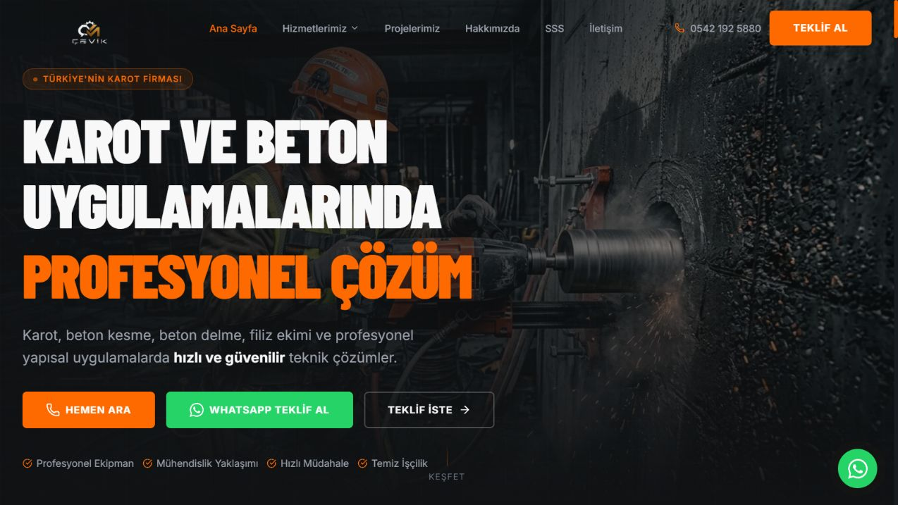

İhtiyaç
Karot, beton kesme ve diğer yapısal uygulamalar için gelen ziyaretçinin doğru hizmeti seçebilmesi ve kolayca teklif isteyebilmesi gerekiyordu.
Karot ve beton kesme hizmetlerini tanıtan, ziyaretçiyi doğru bilgiye ve teklif kanalına ulaştıran kurumsal web sitesi.

Karot, beton kesme ve diğer yapısal uygulamalar için gelen ziyaretçinin doğru hizmeti seçebilmesi ve kolayca teklif isteyebilmesi gerekiyordu.
Hizmetleri ayrı sayfalara ayırdık. Proje örneklerini filtrelenebilir bir seçkide topladık, sık sorulan soruları ve iletişim seçeneklerini gezinmeye ekledik.
Ziyaretçi hizmeti ve örnek işleri inceleyebiliyor. Talebini formda hazırlayıp WhatsApp’ta hazır mesaj olarak açabiliyor.